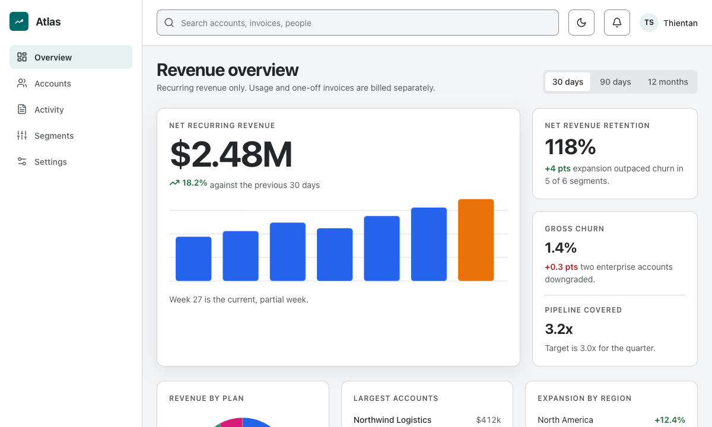
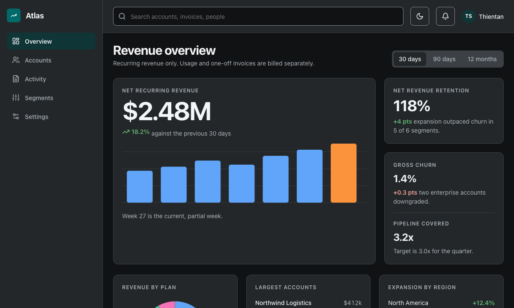
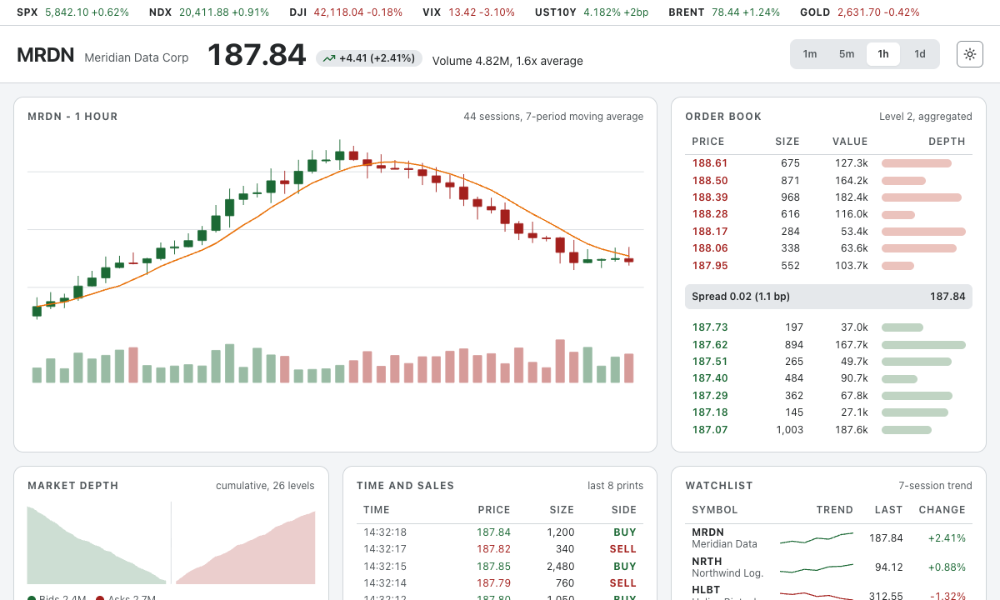

Every screen the kit produces, rendered
Not a gallery of mockups. Each page below is the exact file the gates measure: real contrast in light and dark, keyboard model, target size, no overflow down to a 280 pixel viewport. Open any of them and click around.
Atlas, a full product screen
A revenue console built end to end from the kit: app shell, a hero metric that leads the page, four chart shapes, a table that really sorts, a live activity feed. One token theme, light and dark, every gate green.
Open the dashboard

Meridian Terminal, ten chart types
A trading desk on one screen: candlesticks with volume and a moving average, an order book with depth bars, a cumulative depth curve, the tape, sparklines, stacked area, a waterfall, a bubble chart, a correlation matrix and a gauge. Every chart is inline SVG drawn from the same tokens.
Open the terminal
 Reference app
two pages on one theme, and a Delete flow that traps focus and returns it
Reference app
two pages on one theme, and a Delete flow that traps focus and returns it